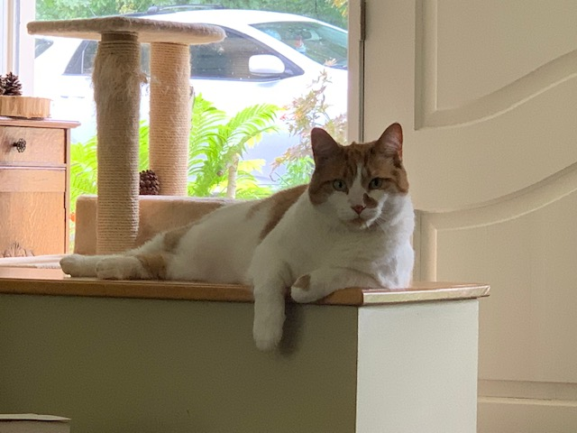
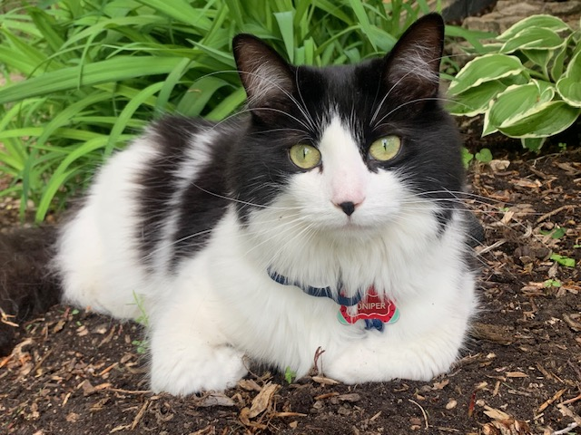
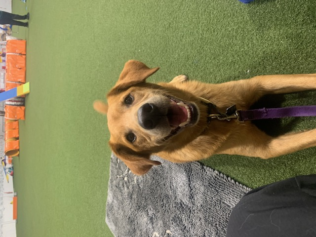

Born and raised in the metropolis of Hamilton, Ontario, I have lived in many places but have always called Hamilton home. From a very young age I was immediately obsessed with horses (sorry mom and dad). I had to wait until I was old enough to begin riding lessons at 6 years old. I had a competitive junior career and was extremely lucky to have a some very nice and fun horses and ponies until the end of my junior years. A number of years later I purchased my first thoroughbred from the racetrack for a whopping $100. He became a champion hunter 2 years later. I no longer own any horses and ride recreationally for fun.
"Rolex" at the Royal Winter Fair
Ex-racehorse "Sheldon"
Winner winner chicken dinner
Following high school I took a gap year. I then went to the University of Guelph for International Development but after a number of years, I realized it really wasn't for me. I then attended Fleming College for the Forestry Technician program. Using the transfer agreement between Fleming and the University of New Brunswick, I then transferred to UNB Fredericton to get a Bachelor of Science in Forestry. I was able to complete most of my classes during my three years there, however, I had a nemesis called calculus. It took me a number of years but I finally received my degree and now have a BScF. During my time at UNB I was a member of the intercollegiate lumberjack sports team. Not many can say they were a competitive Lumberjill I suppose! I am now enrolled in a postgrad certificate program through Fleming College for a GIS Applications Specialist.
I have lived in many places across Canada from coast to coast. To name some in Ontario, I have lived in Hamilton, Guelph, Caledon, and Lindsay. I lived in Fredericton, New Brunswick for school, and Duncan, British Columbia for 7 months doing an intership on an organic farm.
These days, I enjoy my time with my two cats, Woody and Juniper, and my dog Buddy, with whom I am training in agility.
  